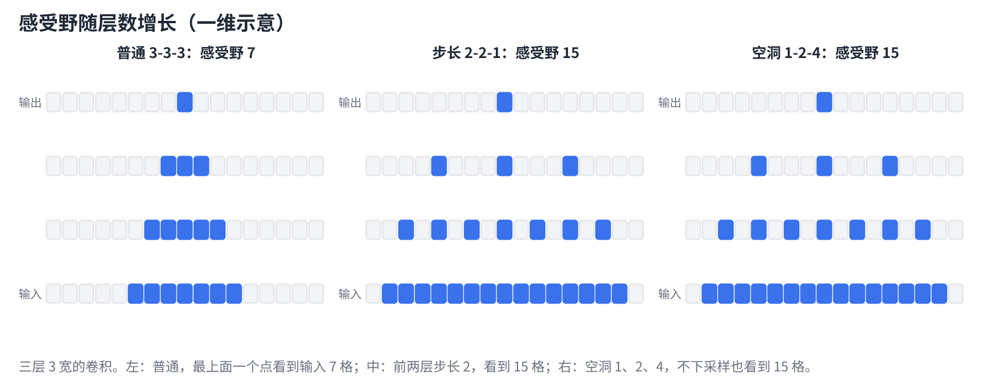
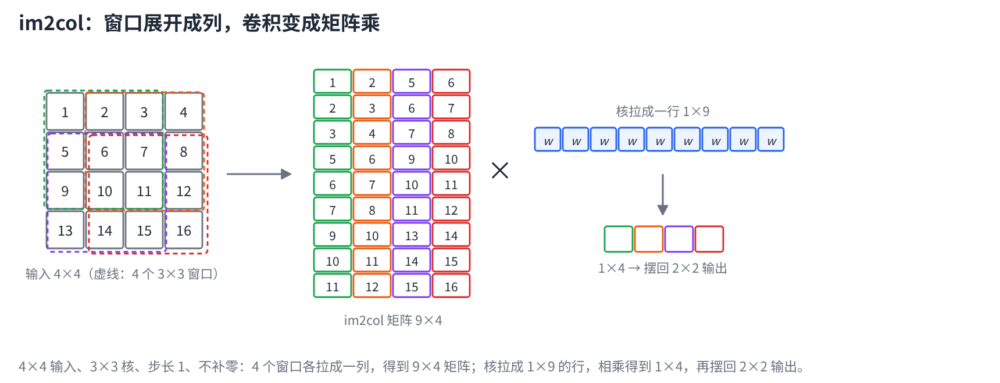
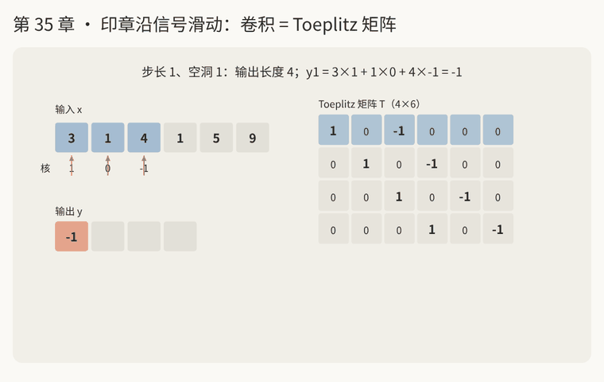

第 35 章 · 卷积的数学：稀疏共享的线性映射、尺寸公式、感受野、卷积定理与 im2col
本地运行
git clone https://github.com/wikieden/math-and-eval-stats
cd math-and-eval-stats/code/notebooks
pip install jupyterlab torch numpy
jupyter lab ch35_convolution.ipynb也可以下载后直接用 VS Code 打开 .ipynb 运行。需要 GPU 的章节在 Colab 里选「代码执行程序 → 更改运行时类型 → GPU」。
本章回答：卷积层和全连接层的数学关系是什么？深度学习里的"卷积"为什么其实是互相关？输出尺寸怎么算，填充、步长、空洞各起什么作用？堆几层才能"看到"一块区域？卷积在 GPU 上是怎么变成矩阵乘法的？什么时候值得用 FFT？
讲解日期：2026-11-25 · 上一章：第 34 章 信息几何 · 下一章：第 36 章 CNN 训练的数学
对应原文：Dumoulin & Visin《A guide to convolution arithmetic》math-and-eval-stats/materials/text/papers/conv-arithmetic-1603.07285.txt（Relationship 1–6：步长 1 到任意步长与填充的尺寸公式 L521–L626；§2.4 L621；Relationship 15 空洞卷积 L1059 及图 5.1）；LeCun 1998math-and-eval-stats/materials/text/papers/lecun-1998-gradient-based-learning-lenet.txt§II（卷积网络：局部感受野、权重共享）
本章缩写：CNN = Convolutional Neural Network（卷积神经网络）；k = 核大小；s = stride（步长）；p = padding（填充）；d = dilation（空洞率）；FFT = Fast Fourier Transform（快速傅里叶变换）；im2col = image to columns（图像 / 到 / 列：把每个窗口展开成一列）；GEMM = GEneral Matrix Multiply（通用矩阵乘法）。全部缩写见 附录 · 缩写与术语表
讲解
第一步：卷积是一个稀疏、共享权重的线性映射（2026-11-25）
类比：拿一个小印章沿着纸条一格一格盖。 每个位置用的是同一个印章（权重共享），每次只碰到几格（局部连接）。
一维信号 x = [3, 1, 4, 1, 5, 9]、核 [1, 0, −1]（"左边减右边"，看相邻变化），valid 模式输出 4 个数。把它写成矩阵乘 y = Tx：
| x₁ | x₂ | x₃ | x₄ | x₅ | x₆ | |
|---|---|---|---|---|---|---|
| y₁ | 1 | 0 | −1 | 0 | 0 | 0 |
| y₂ | 0 | 1 | 0 | −1 | 0 | 0 |
| y₃ | 0 | 0 | 1 | 0 | −1 | 0 |
| y₄ | 0 | 0 | 0 | 1 | 0 | −1 |
T 是 Toeplitz 矩阵（每条对角线上是同一个数）：y = [−1, 0, −1, −8]。全连接层需要 4×6 = 24 个自由参数；卷积只有 3 个，非零元 8 个。卷积 = 一个被强行约束成"稀疏 + 沿对角线共享"的全连接层（第 11 章：线性映射就是矩阵）。
这个约束的含义是平移等变：输入平移一格，输出也平移一格。图像里"猫耳朵"在左上角和右下角长得一样，用同一组权重去找是合理的（LeCun 1998 §II）。
一句话：卷积是线性映射，矩阵是稀疏、沿对角线共享权重的 Toeplitz 矩阵，换来平移等变和极少的参数。
第二步：深度学习里的"卷积"其实是互相关（2026-11-25）
数学上的卷积要把核翻过来再滑：\((x * k)_i = \sum_j x_{i-j}k_j\)；深度学习框架里的 conv 不翻：\(y_i = \sum_jx_{i+j}k_j\)（互相关）。
例子：互相关 [−1, 0, −1, −8]；数学卷积（核翻成 [−1, 0, 1]）[1, 0, 1, 8]，差一个负号。
核是学出来的，翻不翻只是学到的权重顺序不同，对模型能力没影响。要注意的只有两处：和信号处理的公式对照时（卷积定理是对真正的卷积说的），以及第 36 章的反向传播（梯度那一步才是真正的卷积）。
一句话：框架里的 conv 是不翻核的互相关；核是学出来的，所以无所谓，只在对照公式时要记得。
第三步：尺寸公式（2026-11-25）
一维（二维每个方向各算一次），输入 n、核 k、步长 s、填充 p、空洞 d（Dumoulin & Visin Relationship 6、15，L626、L1059）：
例子：
| n | k | s | p | d | 输出 | 说明 |
|---|---|---|---|---|---|---|
| 32 | 3 | 1 | 1 | 1 | 32 | "same"：k = 2p + 1 时尺寸不变 |
| 32 | 3 | 2 | 1 | 1 | 16 | 步长 2 下采样一半 |
| 32 | 3 | 1 | 0 | 2 | 28 | 空洞 2：核实际覆盖 5 格 |
| 224 | 7 | 2 | 3 | 1 | 112 | ResNet 第一层 |
空洞 d 的核在输入上"跨着"取点，有效大小 d(k − 1) + 1，参数不变、覆盖变大。
一句话：输出 = ⌊(n + 2p − d(k − 1) − 1)/s⌋ + 1；k = 2p + 1 且 s = 1 时尺寸不变。
第四步：感受野：输出的一个点能"看到"输入多大一块（2026-11-25）
类比：传话游戏。 第一层每人只听左右邻居；第二层的人听第一层的邻居，等于间接听到了更远的人。
逐层递推：\(r \leftarrow r + (k - 1)\cdot d\cdot J\)，J 是前面所有层步长的乘积（"一格"在输入上跨多远）。
例子：
| 结构 | 感受野 |
|---|---|
| 三层 3×3（步长 1） | 7（VGG：三个 3×3 顶一个 7×7，参数 27 vs 49） |
| 三层 3×3，前两层步长 2 | 15 |
| 三层 3×3，空洞 1、2、4 | 15（不下采样也能看得很远；WaveNet、语义分割常用） |
步长和空洞让感受野按指数涨，而层数只按线性涨。

图 35-1 · 三层 3×3 卷积：普通（左）、前两层步长 2（中）、空洞 1-2-4（右），最上面一个输出点在输入上能看到的范围一句话：感受野按 r += (k − 1)·d·累计步长 增长；步长和空洞让它指数级变大。
第五步：卷积定理与 im2col：两种把卷积算快的办法（2026-11-25）
卷积定理：\(\mathcal F(x * k) = \mathcal F(x)\cdot\mathcal F(k)\)（循环卷积，真正的卷积，第二步）。时域里 n·k 次乘法，频域里只要逐点相乘，加上 FFT 的 O(n log n)：
| n | 核长 | 直接算 | FFT 约 3n log₂n |
|---|---|---|---|
| 1024 | 3 | 3,072 | 30,720 |
| 1024 | 101 | 103,424 | 30,720 |
| 65536 | 1025 | 67,174,400 | 3,145,728 |
CNN 的核很小（3×3），直接算更划算；FFT 适合长核（音频滤波、长卷积序列模型）。
im2col：把每个 k×k×C 的窗口拉成一列，排成矩阵，卷积就变成一次大矩阵乘法（GEMM），能用上高度优化的矩阵乘库和 Tensor Core。代价是内存：C = 64、56×56、3×3 核时 im2col 矩阵是 576 × 3136 = 180 万个元素，是输入（20 万）的 9 倍（= k²）。cuDNN 里的"隐式 GEMM"就是不真的展开、在算的时候按需取数。

图 35-2 · 4×4 单通道输入、3×3 核：4 个窗口各拉成一列（9×4 矩阵），核拉成一行（1×9），相乘得到 2×2 输出场景代码：PyTorch 里的 im2col 就是 unfold（真实库调用；本书环境没装 torch，没跑过）：
cols = F.unfold(x, kernel_size=3, padding=1) # (B, C·9, H·W)：每个窗口一列
y = (w.view(C_out, -1) @ cols).view(B, C_out, H, W) # 卷积 = 矩阵乘
assert torch.allclose(y, F.conv2d(x, w, padding=1), atol=1e-5)
一句话：小核用 im2col 变矩阵乘（拿内存换速度），长核用 FFT（卷积定理把卷积变逐点乘）。
动画演示：印章沿信号滑动

可交互版：animations/35-convolution.html（滑块调输出位置、步长、空洞）。
怎么看：
- 上排是输入 [3, 1, 4, 1, 5, 9]（valid 时不补零），高亮的格子是当前窗口，下排是已经算出来的输出（第一、三步）；
- 右边是同一个运算的 Toeplitz 矩阵，当前那一行高亮：每一行就是"印章盖在这里"（第一步）；
- 把步长调成 2、空洞调成 2：窗口跳着走、跨着取，输出变短（第三步）。
练习与作答记录
题 1（第一步）：长度 5 的信号、核 [1, 2]（valid、步长 1），写出 Toeplitz 矩阵。全连接要多少参数？
作答：（待作答）
题 2（第三、四步）：输入 64×64，依次经过 conv(k = 5, s = 1, p = 2)、conv(k = 3, s = 2, p = 1)、conv(k = 3, s = 1, p = 1)。写出每层输出尺寸和最后的感受野。
作答：（待作答）
题 3（第五步）：C = 128、28×28、3×3 核（填充 1）的 im2col 矩阵是多大？是输入的几倍？
作答：（待作答）
口诀
卷积是盖印章，矩阵稀疏又共享；
框架里不翻核，其实是互相关；
输出等于 n 加 2p 减 d(k−1) 减 1，除 s 加 1；
感受野逐层加 (k−1)·d·累计步长；
小核 im2col 变矩阵乘，长核 FFT 变逐点乘。
本章复习卡片
ST118（卷积 = Toeplitz 矩阵；互相关 vs 卷积）、ST119（尺寸公式与感受野）、ST120（卷积定理、FFT 与 im2col 的取舍）。练习做完后，按答错、卡住的地方补上。
附录 · 延伸阅读
留给以后深入学习用，不影响本章主线。★ 是建议先读的。
推荐阅读
| 读什么 | 读哪里 | 读它为了什么 |
|---|---|---|
| ★ Dumoulin & Visin | 第 2 章（Relationship 1–6，L521–L626）、§5.1 空洞卷积（L1035–L1075） | 尺寸公式的完整推导和配图 |
| ★ LeCun 1998 | §II（卷积网络、LeNet-5） | 局部感受野、权重共享、下采样的动机 |
| 《CUDA 从线程到 Tensor Core》 | GEMM、Tensor Core 章节 | 为什么把卷积变成矩阵乘就快 |
| 第 11 章 线性代数基础 | 第一步 | 线性映射 = 矩阵 |
| 第 30 章 泛函分析入门 | 第三、四步 | Fourier 基、积分算子（连续版的卷积） |
数学原理
- 平移等变：S 是平移算子，Toeplitz（循环时是循环矩阵）T 满足 TS = ST。
- 循环矩阵被 DFT 对角化：循环矩阵的特征向量就是 Fourier 基，特征值是核的 DFT，这就是卷积定理的矩阵版。
- 尺寸公式：核在输入上占 d(k − 1) + 1 格，补零后长度 n + 2p，能放下的起点个数是 ⌊(n + 2p − d(k−1) − 1)/s⌋ + 1。
- 感受野递推：第 l 层一格对应输入上 J_l = ∏s 格，核再往外伸 (k − 1)d 格。
公式清单
| 公式 | 意思 |
|---|---|
| \(y = Tx\)，T 是 Toeplitz | 卷积是线性映射 |
| \(y_i = \sum_jx_{i+j}k_j\) | 框架里的“卷积”（互相关） |
| \(o = \lfloor(n + 2p - d(k-1) - 1)/s\rfloor + 1\) | 输出尺寸 |
| \(r \leftarrow r + (k - 1)dJ\) | 感受野 |
| \(\mathcal F(x * k) = \mathcal F(x)\mathcal F(k)\) | 卷积定理 |
代码对照：把本章的数字用代码算一遍
代码在仓库本地
math-and-eval-stats/solutions/chapter-code/ch35_convolution.py，配套测试tests/test_ch35.py：
bash cd math-and-eval-stats/solutions/chapter-code uv run python ch35_convolution.py uv run pytest tests/test_ch35.py
讲义 ↔ 代码：
| 讲义 | 公式 | 写法 | 跑出来 |
|---|---|---|---|
| 第一步 Toeplitz | y = Tx | toeplitz_matrix(6, K) @ X |
[−1, 0, −1, −8] |
| 第二步 互相关 | 翻不翻核 | np.correlate vs np.convolve |
差负号 |
| 第三步 尺寸 | ⌊…⌋ + 1 | out_size(224, 7, 2, 3) |
112 |
| 第四步 感受野 | 递推 | receptive_field(layers) |
7、15、15 |
| 第五步 im2col | 矩阵形状 | im2col_cost(64, 56, 56, 3) |
(576, 3136)，9 倍 |
关键几行：
t[i, i:i + len(k)] = k # Toeplitz：第 i 行从第 i 列开始放核
return (n + 2 * p - d * (k - 1) - 1) // s + 1 # 尺寸公式
r += (k - 1) * d * jump; jump *= s # 感受野：先用旧的累计步长，再乘上这一层的
代码里才看得到的 3 件事：
np.correlate和np.convolve是两个函数：NumPy 把互相关和卷积分开命名；PyTorch 的conv1d对应的是前者。- 感受野递推里 jump 的更新在加之后：这一层的核按"前面各层"的累计步长伸展，自己的步长只影响后面的层。
- FFT 的代价只是估算：3n log₂n 粗略算了两次正变换、一次反变换；实际还要补零到 2 的幂、处理边界。
自己改一改（不影响练习答案）：
- 把核换成 [1, 2, 1]/4（平滑），看 Toeplitz 矩阵和输出。
- 算一算 ResNet-50 第一层（7×7、步长 2）再接 3×3 最大池化（步长 2）以后的感受野。